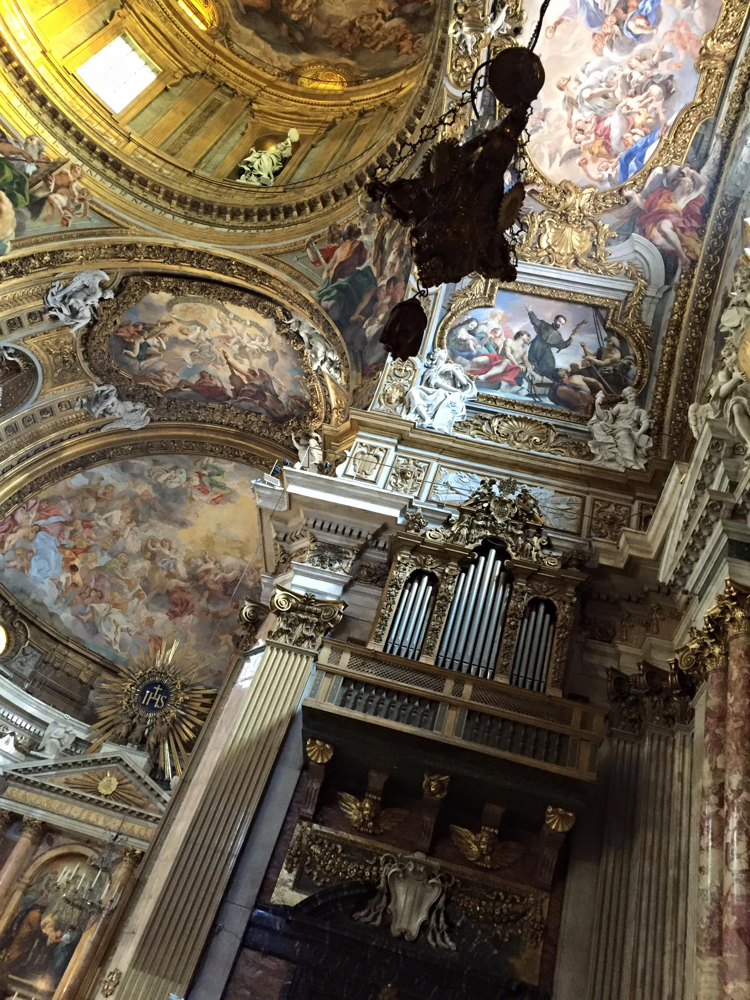

One thing you would find more than gelato in Rome would be their abundance of Baroque churches. One could spend a good weekend just off to explore all the churches they have on offer. It is best to plan out the purpose of the trip before heading to Rome as just museums on its own could take you at least 3 days to go through all of them.
Rome is a very walkable city, bring your finest pair of sneakers and explore the city on foot. If not, their transport system could also take you to places you possibly couldn't walk to from the centre like the EUR (the fascist centre of Italy) and the sports stadium. Zaha Hadid's MAXII museum will also be a point of interest slightly out of the centre.
October is a good time to visit Rome as there is a slight breeze but warm enough to go out in the day with just a tshirt and jeans (thin jacket for when it gets cooler at night). With the temperature at 16C it has been proven to be very comfortable to walk around the city as oppose to going during April time where temperature could reach up to 30C (a situation one should try to avoid especially when trying to queue to get into the Vatican)
Do try to go up St.Peter's Cathedral as that is one of the best vantage point into seeing whole of Rome on top.
Tip for architecture students: if you show your student ID showing you are in fact an architecture student it is possible to enter to most of the places for free (colosseum included.)
A presto!